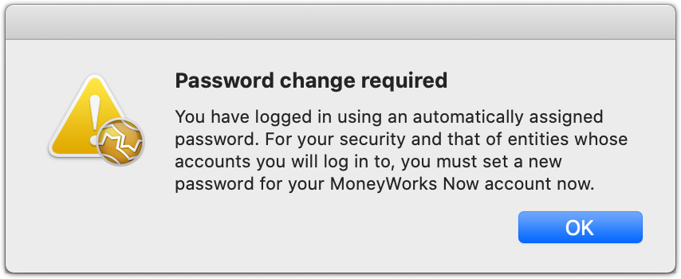
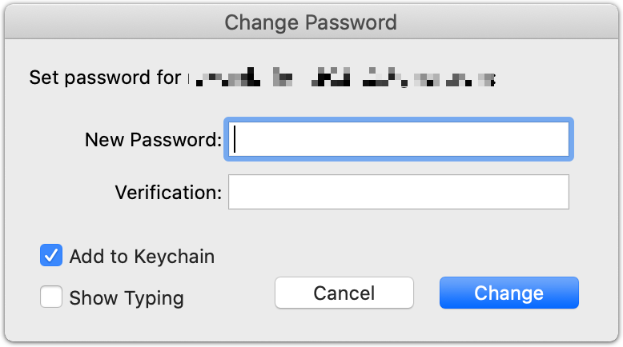
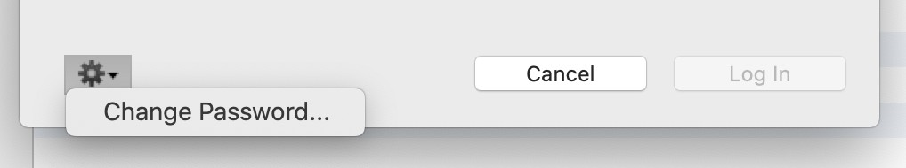
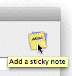

MoneyWorks Services, Support and MaintenanceIt is strongly recommended that you leave the Add to Keychain/Vault option turned on (provided that this is your own computer with password protection on your computer login).

You should now see the list of documents available to you in MoneyWorks Now. Select the document and click Log In (or double click the document).
Note: If you wish to change your password in future, you can access the Change Password dialog after logging in by clicking the gear wheel icon at the bottom of the MoneyWorks Now documents list and selecting Change Password...

2 If you are using a MoneyWorks Gold trial to set up your accounts file, you must upload your file within 45 days (or 99 opens, whichever comes first) of the file creation. After this point the trial copy will only be able to open the file directly as read-only. The trial will be able to fully access hosted MoneyWorks Now files.↩︎
MoneyWorks Services are optional modules that can be incorporated into specific MoneyWorks data files. There is normally some sort of charge for a MoneyWorks Service.
New MoneyWorks Services will be added over time. Current services include:
Bank Feeds: Automatically download latest bank statement data;
eInvoicing: Send and receive invoices automatically using the PEPPOL standard;
Invoice/Order Automation: Process PDFs of supplier invoices or customer purchase orders and have them automatically entered into MoneyWorks without having to rekey them.
Purchase Order Matching: Check price and quantities on imported purchase invoice (such as eInvoices and processed PDFs) against the originating purchase order, and automatically manage the received quantities on the order.
Note: MoneyWorks Services are maintained and evolve constantly, and hence generally require the latest version of MoneyWorks. If you are using a service and it fails or gives inexplicable errors, make sure you are using the latest version.
To view MoneyWorks Services you must be connected to the internet. As of version 9.1.4, to manage (enable/disable) Services or Support, you must be an Administrator user (i.e. if your document is password protected, have access to File>Users and Security).
The MoneyWorks Services window will open, displaying the available MoneyWorks Services.
Use this to view the available list of services. Additional services will be added over time.
Before you can use a service, you need to register your MoneyWorks company file. Registering a data file is different from registering your MoneyWorks licence, as one licence can apply to multiple company files.
To register your document:
Click the Register File link in the MoneyWorks Services window
The name and address details are taken from the Company Details. If these are not correct click the Done button and change them under Show>Company Details.
The email address is important as instructions about the services and any billing receipts will be sent to this address.
Click the Register Document button
The file will be registered, allowing MoneyWorks Services to be enabled.
To change the registration details, click the Update Details link.
Some services are charged for. For these to be enabled you need to lodge a credit/debit card (Visa/Mastercard). To lodge a card:
Click the Lodge Card link
A credit card entry screen will be displayed
The card will be validated1 and stored.
Note: The credit card information is not held by Cognito Software Ltd, but is securely stored by our payment provider Windcave (formerly known as Payment Express). We do not see your full credit card number or CVC.
You can update or delete a lodged card by click the appropriate link next to the card display:
When you have registered your document and lodged a credit/debit card, you can opt to allow support queries to be automatically charged to this card (which obviates the need to supply your credit card and other details when calling or emailing).Once you have enabled support, you will be issued with a MoneyWorks Support ID and PIN number. These are used to expedite support requests.
If you opt to allow Enable Support in this manner, support will be automatically charged to your lodged card at the end of each (New Zealand) day. As part of enabling support, you can also specify:
A purchase order number (PO number) that will appear on your invoice;
That the caller supply a PO number;
That the caller supply a specific PO number, allowing you to enable support only for people you authorise;
That other entities running under your MoneyWorks licence will also be charged to this card (otherwise you will need to enable support for each company file).
Once you have have enabled support, any user can retrieve the Support ID and PIN (but not the PO number) by choosing Help>Get Support. This also shows support contact details, as well as a history of previous support events handled under the Support ID number. Support calls and emails should also reference the Support ID and PIN, as well as the PO Number if that has been set to being required.
To enable a service:
Click the More about <service> link
More information about the service is provided, including charging details (if any).
Click the Enable <service> link and follow the instructions on the screen
The service will be loaded the next time you open/connect to this file (so you need to choose File>Close or File>Disconnect, then reopen the file).
If the service is charged for, your lodged credit card will be billed the amount indicated (and a receipt emailed to your registered address).
Some services require additional components (such as forms, reports, navigator panels). In this case further instructions and a link to access the components will be emailed.
Some services require sign-up with, and might be charged by, a third party. These details are displayed when you enable the service.
Services that are charged for by Cognito will automatically renew after the allotted time (the renew date is shown for charged services).
On the renewal date, your lodged credit card will be billed the service fee, and a receipt emailed.
You need to disable the service (or delete the lodged credit card) before the renewal date to stop the service being renewed and charged for.
To disable a service:
Click the Disable link
The service will be disabled.
If you made a mistake, or subsequently want to re-enable the service, click the
Enable link.
Note: If the service is charged for by Cognito, such as Bank Feeds, it will continue to run until the renew date, after which is will no longer be available.
Note: If the service is charged for by a third party, you must contact them separately to advise you are not longer using the service (otherwise they will probably keep charging you).
MoneyWorks Services are not generally pre-installed, but will load automatically when you open/connect to a company file for which they are enabled.
When you register your company file you are lodging the details of that file so it can be uniquely identified for any services you might subsequently want to use.
When you enable a service for a file, a record of this is kept on our server so that when you open the file the enabled services can be automatically downloaded and installed. Once you have enabled one or more services for a file, you might notice a slight pause when you open that file as it downloads and installs the latest version of the service.
Once you have enabled and installed a service for a particular file, the service will keep loading for that file even if you do not have an internet connection (provided you are using a computer that has previously accessed that service). However as most services require an internet connection, this is probably of
limited value.
Important: Services are keyed to a particular MoneyWorks file. If you copy that file (or have a backup of that file), that copy/backup will still have access to the services of the original, and any changes in the services of one of the copies/backups/original will be reflected in all of them. For example, disabling a service in the copy will also diable the service in the live file. If you wish to create a copy which does not share services, you should make a clone.
As of MoneyWorks 9.1.8, services will not load in a document whose path or file name contains "[No Services]". This allows you to take a copy of your live file, change the name, and use the file for training or experimenting, and not worry about accidentally invoking a service. This is particularly important where accessing the service changes the state of the backend service provider, such as Invoice/Order Automation. Note that this suppresses access to tax filing for HMRC, IRAS, IRD etc.
MoneyWorks Maintenance was introduced to MoneyWorks 9 to replace the old upgrade process. Industry wide, software maintenance has largely replaced the old fashioned software upgrades for very good reasons. From a user perspective there is certainty in the ongoing running costs of the software, and the hassles of new serial numbers and file upgrades largely disappear. From a MoneyWorks perspective, we will be able to provide continuous improvement and new features without the choke point of new version upgrades2.
For MoneyWorks Gold and Express3, software maintenance is charged at just one percent per month after the first twelve months. This is payable annually in- advance, and commences on year after purchase (or upgrade, if you are upgrading from an older version of MoneyWorks).
When MoneyWorks detects that your software maintenance is due, it will prompt you to renew it.
Click the Renew Maintenance link to start. You will be shown the amount and asked to check/update your registration details. You will then be able to enter your credit/debit card details via our payment provider Windcave. This card information is not stored.
If you have lodged a credit card for MoneyWorks Services against the MoneyWorks file that you have opened, you have the choice of charging the renewal to the stored card or charging a different card.
If you don't renew your annual maintenance:
Your current version of MoneyWorks will keep running fine, but you will not be able to get any additional updates until the maintenance is renewed.
You will be prompted every so often to renew (these things are easy to forget).
We may not be able to help you if you have issues. Only the current version
of MoneyWorks is supported.
If you are using any MoneyWorks Services, these may stop working at some stage in the future (possibly with inexplicable error messages). MoneyWorks Services are continuously improved and may use new features not available in older versions.
Renewing your maintenance later
To renew your maintenance later, either click the Renew Maintenance link when prompted, or choose Help>Software Updates and click the Renew Maintenance button.
You will not be penalised for paying your maintenance late, but nor will you gain anything as the oustanding maintenance accrues every month.
1 Validating the credit card applies a temporary charge of $1.00 to the card. This may appear briefly on the card statement as a pending item, but will not be charged.↩︎
2 In the almost thirty years since MoneyWorks was introduced, there have only been eight product upgrades. Each of these was significant, but an average of three and half years between upgrades is just too long.↩︎
3 Software maintenance for MoneyWorks Datacentre is charged differently, and is 15% per annum.↩︎
One of the benefits of using an accounting system is that it summarises your various types of economic activity. For example, you can see at a glance what your total sales are, or how much you spent on advertising.
However for this to work, you need to establish a coding scheme that categorises the various types of activity that are important to you. Each code that you create is called a general ledger account1, and all of your general ledger accounts constitute your chart of accounts,
Whenever you enter a transaction into MoneyWorks, you specify what account codes the transaction will be affecting, and by how much each account will be affected. It follows then that the structuring of your chart of accounts is very important as it determines what level of information can be extracted from your accounts. Too few accounts, and you may not be able to determine in enough detail just where your money went (or came from). On the other hand if you have too many accounts, you may be swamped in detail and unable to see the forest for the trees.
With MoneyWorks your account structure can be as simple or as complicated as you require. MoneyWorks codes can be numeric or alpha-numeric. Most of the reports that come with MoneyWorks will work no matter what account codes you use, and will continue to work as you add and delete accounts. Finally, if you are using MoneyWorks Gold, an account can be broken down further into departments (or, if you are an accountant, into subledgers) for finer level of detail.
Unlike other systems, MoneyWorks does not limit your reporting to the structure of your chart of accounts. This means that there are no complex “Header Accounts” or “Transfer To” accounts. Instead, you can have whatever coding structure you like, and know that it will work with the standard MoneyWorks reports.
In addition, you can alter the chart of accounts at any time. This means that you can add or remove account codes, and basically reconfigure your accounts as you get more experience.
As an example of a chart of accounts, consider the following:
Code Description
10 Income
20 Expenses
30 Cash*
40 Accounts Receivable* (Not Cashbook)
50 Accounts Payable* (Not Cashbook)
60 GST Collected*
70 GST Paid*
80 Fixed Assets
90 Profit & Loss*
This is about as simple as you can get — MoneyWorks requires the presence of accounts marked with *. If you use this you will be able to determine your profitability, do your GST, and (if you are using MoneyWorks Express of Gold) know how much you are owed and how much you owe.
However for most businesses it would be inadequate because all the income and expenses are lumped together, so you can’t see how it was derived. It would be more sensible to look at the type of income and expenses that is important to the business and have codes for these. Thus instead of a single expense code we might have:
Code Description
Salaries & Wages
Office Expenses
Vehicle Expenses
Other Expenses
We can then see at a glance how much was paid out in wages, or how much it cost to run the office. But again there is not much level of detail — for example, we can’t determine how much the telephones cost to run, or how much was spent on stationery. This may not be a problem, as we may never be interested in this information. However if we were, we would need to go to a finer level of detail.
It is possible of course to go too far and make things too complicated. If you find that you are agonising over whether an expense should be put under the “Pencils Expenses” code or the “Pens Expenses” code, then you probably have too many codes.
The structure of your chart of accounts is important, and you need one that will meet the needs of your business. Remember that the chart of accounts determines what level of information is available.
MoneyWorks comes with several account templates that might be of use to you, or at least serve as a good starting point. These accounts are made available to you when you create a new MoneyWorks document —see Creating Your New File.
Your accountant will also have standard charts of accounts that might be appropriate. However remember that your accountant’s requirements are different from yours, and that the information that you require to manage your business on a day to day basis may differ markedly from what your accountant wants2.
So what level of detail is appropriate? Only you can answer that question, but the following examples may highlight some of the issues:
Your business uses the fax machine for disseminating information to customers throughout the country. Do you include all the fax toll charges as part of your normal telephone expenses, or do you treat it separately so that you can monitor the costs involved?
Your business operates three vehicles. Do you have a single “vehicle expenses” account against which all running costs are charged, or is it important to know how much each vehicle is costing? If so, you should have a separate account for each vehicle3.
You sell several different types of products. Do you have one “Sales” account code, or do you have one for each product range so that you can determine the revenue generated for each range?
These sorts of decision will differ from business to business, and can only be made by you.
In larger organisations, security of access to the general ledger becomes an issue, normally around sensitive general ledger accounts like Wages or Directors Fees. The MoneyWorks general ledger allows you to put a security level on each account, allowing you to hide accounts from people with a lower security level. When you are setting up your accounts, you should also think about what level of security each should have.
MoneyWorks offers great flexibility in naming your accounts. However experience has shown that the following guidelines are worth following:
Use simple codes where possible. Although MoneyWorks allows up to seven characters, three of four should be enough for most businesses.
As a general rule, numeric codes such as “120” are preferable to alpha- numeric codes such as “POST”. They are both easier to type, and offer some advantages in reporting and extracting information.
If using numeric codes, group all like codes together. For example all income accounts could be in the 100 - 199 range, direct expenses in 200 - 299, overheads in the 300 - 399 and so forth. Also make sure that the codes all have the same number of digits.
Look for common structures, such as the product lines, types of activity and so on. Examples might be projects that you run, actual cost centre departments in your business, vehicles, staff and so on. If you have these, and are using MoneyWorks Gold, consider using departments —see Departmental Accounts.
Above all, before you start, think about what you are trying to achieve. Possibly the best way to focus on this is to think about what sort of information you want to get out of the system. Often this will determine what you need and how to put it in.
The MoneyWorks Gold department feature provides you with a two- dimensional account structure4. This is very powerful if you need to report for entities within your organisation, such as vehicles, projects, staff and (obviously)
departments.
An organisation runs a number of vehicles and needs to track vehicle performance. Each vehicle can be represented as a department in MoneyWorks Gold, and direct income and expenditure allocated directly against the vehicle. When new vehicles are added, there is no need to change the chart of accounts
— they simply need to create a new department for the vehicle. Vehicles can also be organised into different types (diesel, petrol, trucks, vans or whatever), and the performance of these overall types (called classifications in MoneyWorks) can be monitored.
An organisation wishes to report on inputs by individual staff members and their corresponding outputs. The staff members can be represented by departments, but what about the inputs and outputs? They have identified outputs which they have numbered as follows:
promotional
seminars
reports
training
The inputs are standard items such as postage, photocopying etc.
Their chart of accounts could be structured as four digit codes where the first three digits refer to the inputs and the last to the output. So if 200 for example was the prefix code for postage; the account code 2001 would be postage for promotion, 2002 postage for seminars etc. Associating this with salespeople departments would give 2002-JB — postage for a seminar given by JB.
In account enquiries and in custom reports, you could then specify wildcard patterns such as:
200@ Provides a total figure for postage
???2@ Provides a figure for seminars only
200?-JB Provides postage expenditure by JB for all outputs @-JB Provides total figures for JB
Many more combinations are possible. For further information —see Account Code Matching For the use of wildcard patterns in custom reports —see Account Code.
Many medical and dental practices are run as a form of partnership, where the income and some of the expense items are directly attributed to one of the partners, but the general overheads are shared equally among all of them.
Imagine that John, Derek and Helen are doctors working in this manner. There are several ways they could structure their accounts.
With each partner as a department.
Thus the direct income account for John might be 100-J, and for Derek 100-D, whilst the direct expenses, such as the wages for their respective practice nurses could be 210-J, 210-D. The rent of their premises (which is shared) would be non-departmentalised (e.g. 320)
This allows individual income statements to be produced for each doctor using the departmental breakdown.
With each partner’s initial as the last character of the account code.
Thus the income accounts would be 100J, 100D and 100H, and the practice nurses 210J, 210D and 210H. Each of these accounts could be associated with a category (JOHN, DEREK, HELEN), and the category breakdown could be used for the individual reports.
Although the latter is harder to set up than the former, it does offer one significant advantage — it can track each doctor’s GST, a common requirement in this sort of situation. To do this, new tax codes (J, D and H say) would need to be created and assigned to each account5.
For more information on departmental accounting —see Departmental Accounts.
Before you start setting up, you should have determined:
All the accounts in your chart of accounts, and, for MoneyWorks Gold users,
What departmental breakdowns if any you wish to use
Which groups of departments if any you want to associate with specific accounts
Although it is possible to associate accounts with departments after they have been created, the optimum order for entering the components of a chart of accounts is as follows:
Account Categories (optional).
Departmental Classifications (Gold only, optional).
Departments(Gold only, optional).
Departmental Groups(Gold only, optional).
A MoneyWorks chart of accounts requires at least one of each of the following system accounts:
GST/TAX Paid
GST/TAX Received
Bank Account
Profit and Loss
MoneyWorks Express and MoneyWorks Gold require the following system accounts in addition:
Accounts Payable
Accounts Receivable
You can add as many other accounts as you need. The following information is stored for each account.
Code: An alpha-numeric code (up to 7 characters) used to identify the account.
Description: The text description of the account. This is normally what will show in reports.
Account Type: The type of the account. You choose this from a pop-up menu.
See Account Types.
Categories: Four separate categories are available, and are used for grouping accounts for reporting and enquiry purposes.
Tax Code: The default tax code for the account. This will automatically be inserted into the tax code field of transaction detail lines for the account. MoneyWorks system accounts all have a tax code of “*”. You cannot change the tax code in a detail line for an account whose tax code is “*”.
Dept Group (Gold Only): The department group code which contains the departments that you want to associate with the account (you cannot associate the departments themselves with an account directly). Assigning a group to an account creates a set of sub-ledgers for the account — each department code is added to the account code after a hyphen.
Classification (Gold Only): The classification for the account’s associated ledger record. If you departmentalise the account (by assigning a Department Group), the subledgers will use the classification associated with each department. You can thus use Classifications to segment your general ledger.
Bank Information: For bank accounts only, the bank account code and the type of account.
Colour: The colour of the account — colour is for your own use.
Accountant’s Code: This is the code which your accountant uses for the account. The code is free form, and the same code can be used for more than one MoneyWorks account. This code (instead of the Moneyworks code) can be used when you export information for transfer into your accountant’s practice management system.
P&L Account: In Gold only, for non balance sheet accounts, the P&L account into which the balances for the account will be placed at the end of the financial year. The P&L accounts in your chart of accounts appear in a pop- up menu in the Account entry dialog box. Usually one P&L account is sufficient, so you won’t need to change this.
Use as Heading: Set this if you want the primary use of the account to be as a heading in summary reports. If this option is set, you will not be able to directly code transactions to this account.6
Job Code Required: In Gold only, set this option if you have to specify a job code whenever you use this account —see Recording Jobs in Transactions. Note that you should not set this option unless you are showing job columns in transactions —see Job Preferences.
Discountable: In Gold and Express, reset this option (it is on by default) if you do not want invoice lines coded to this account to attract a prompt payment discount. Freight would be a common example.

Security Level: Controls who can see the account, or transactions that use the account. For more sensitive accounts, such as payroll, set the popup to have more stars (higher security)—only users with an equivalent or greater Acct Security Level will be able to see accounts, or transactions that use this account.Notes: Click the Notes icon to add a note to the account. This can be made to automatically display whenever the account is directly used in a transaction —see Sticky Notes.
Click the note icon
to add a sticky note
GP GST/VAT/
TAX Paid
CA A Current Asset account used to hold the amount of GST/VAT that you have paid out and can claim back. Each tax code can have a different GST Paid account associated with it.
Accounts must belong to one of the standard eight account types. The first column is the shorthand code that MoneyWorks uses to identify the account types.
PL Profit & Loss
SF A special account of type Shareholders&rsqt; Funds to which any profit (or loss) for a financial year is transferred at the end of that year. MoneyWorks allows you to have more than one Profit & Loss account and you can specify which Profit & Loss account a particular Income or Expense account is to be associated with (and therefore have its balance transferred to at year end).
In the Accounts list window, system accounts show with their general account type code italicised in the Type column. The general account code for these system account types is shown in the third column of the above table.
| Code |
|
|
|---|---|---|
| SA |
|
|
| CS |
|
|
| IN |
|
|
| EX |
|
|
| CA |
|
|
| CL |
|
|
| FA |
|
|
| TA |
|
|
| TL |
|
|
| SF |
|
|